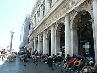
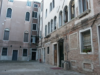

Walk along the Grand Canal near St. Mark's Square. |

Libreria Sansoviniana (Sansovino's Library) |

Feeding pigeons. |

A typical street on the way to St. Mark's Square. |

St. Mark's Square filled with crowds. |

A gondola stand near St. Mark's Square. |

A typical street in Venice. |

A street intersection. |
|

One of many squares in Venice. |

Typical street paving. |

Typical interior square with a outdoor cafe. |

A restaurant. |